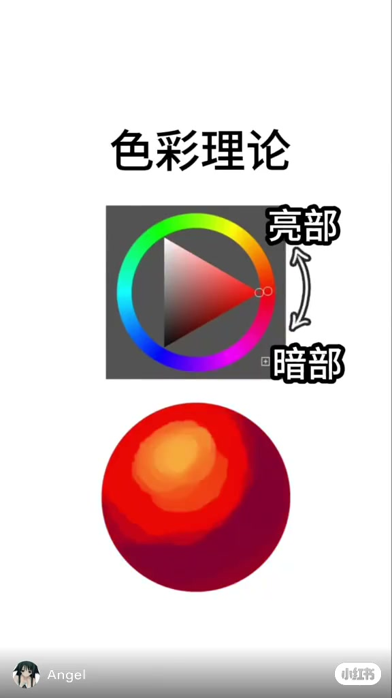
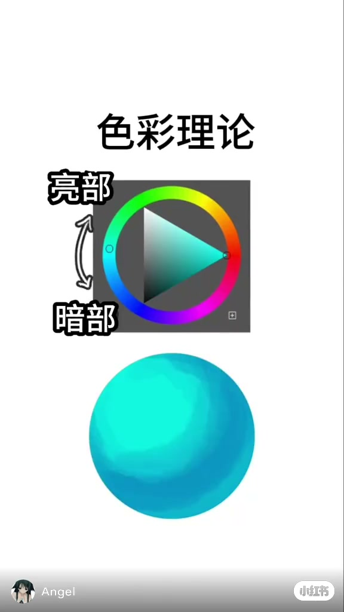
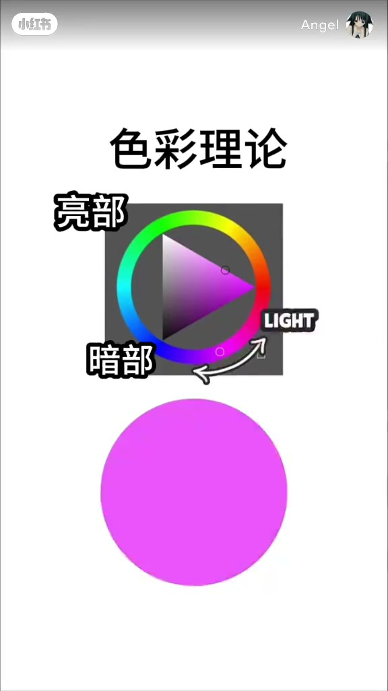
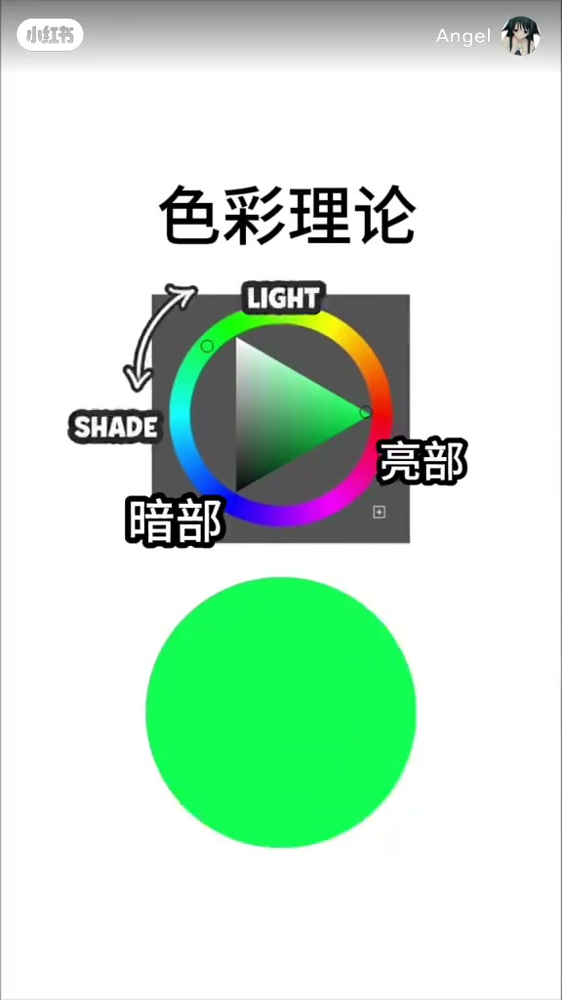
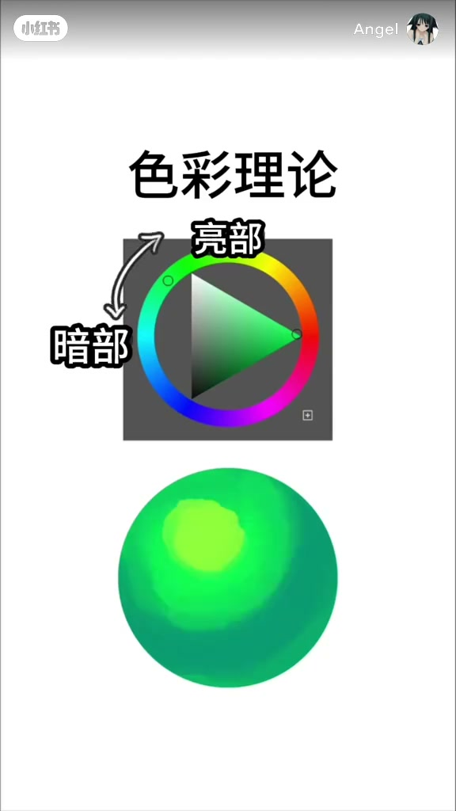

内容要点
这是一条几乎没有讲解的画面演示。笔记标题是「色彩理论教程」，画面大字只有「色彩理论」。作者名 Angel 以水印出现。视频没有交代软件名称，也没有讲互补色、三角配色或调色节点。本篇只记这一条片子里实际出现的四块颜色。
知识结构
色轮停在红，右侧写着亮部和暗部。圆块开头是均匀的红，约两秒时上沿偏橙，下沿更暗并带一点蓝。
色轮和圆块换成青，亮部、暗部改到左侧。上沿保持亮青，下沿压暗后更偏蓝。这一段没有稳定的黄向高光。
约 5 秒，色轮右侧出现英文 LIGHT，圆块仍是平涂的亮紫。随后 LIGHT 消失，圆块只是上沿略亮、下沿更暗，色相仍是紫。
约 7.5 秒，色轮上 LIGHT 和 SHADE 与中文亮部、暗部同帧出现，圆块还是均匀亮绿。到约 9 秒，左上铺上黄绿，右下更深并往青绿走。
这条片子用四个色相演示同一件事：先平涂，再在色块上分开亮侧和暗侧。红和绿能看出亮侧往黄、暗侧往蓝青；青和紫主要是变暗。画面没有给出可以照抄的数值。
00:00–00:02
红色：上沿偏橙，下沿发暗
开头白底，正中是一枚色轮：外圈选色相，里面是明度和饱和度的三角。顶部四个大字是「色彩理论」。色轮停在红色。右侧靠上写「亮部」，靠下写「暗部」，两词之间有一条弯箭头。画面底部有作者名 Angel 和小红书水印。
下面的大圆块先是一块很纯的红，取样大约是红 233、绿 8、蓝 4，上下左右几乎一样。到大约 2 秒，上沿变成橙色，取样大约 245、133、47；下沿掉到更暗的红，并多出一点蓝，大约 131、0、50。口播极少，依画面，这一步就是把同一块红色拆成亮侧和暗侧。

00:02–00:05
青色：标签换边，下沿更偏蓝
大约 2.5 秒，色轮和圆块一起换成青色。亮部和暗部从右侧挪到左侧，仍是上亮下暗的一对。圆块先平涂成很亮的青，大约 19、249、223。
到大约 4.2 秒，上沿还是这块亮青，下沿绿通道掉下去，颜色更暗也更偏蓝，大约 13、152、193。和红色那一段相比，青色的亮侧没有铺成黄色。能确认的变化是明度拉开，暗侧略偏蓝。

00:05–00:07
紫色：LIGHT 只停一帧
大约 5.03 秒，色轮停在紫色，下面是一块均匀的亮紫，取样大约 235、84、251，上下没有明暗差。色轮右侧闪出英文 LIGHT，左侧仍是「亮部」和「暗部」。作者水印从小红书画面底部换到顶部。再过大约 0.1 秒，LIGHT 就不见了。
到大约 5.8 秒至 6.2 秒，圆块才拉开明度：上沿大约 226、87、242，下沿大约 151、37、221。两边都还是紫，绿通道略有差别，看不出红色那种明显的橙与蓝。LIGHT 在这一段里只是闪现的标注，没有停下来让人跟着调。

00:07–00:10
绿色：先闪出两个英文词，再铺上黄绿
大约 7.5 秒，色轮转到绿色。同一帧里能读到四个词：LIGHT、SHADE、亮部、暗部。下面的圆块仍是均匀的亮绿，大约 17、255、82。大约 7.65 秒，两个英文词消失，只留下中文亮部和暗部。
铺色发生在后面。大约 9.4 秒，圆块左上出现一块黄绿，取样大约 140、255、63；右下和下沿更深，蓝通道相对抬高，大约 11、156、113，往青绿色走。片子在这一块绿色上结束，没有新的标题或总结句。

